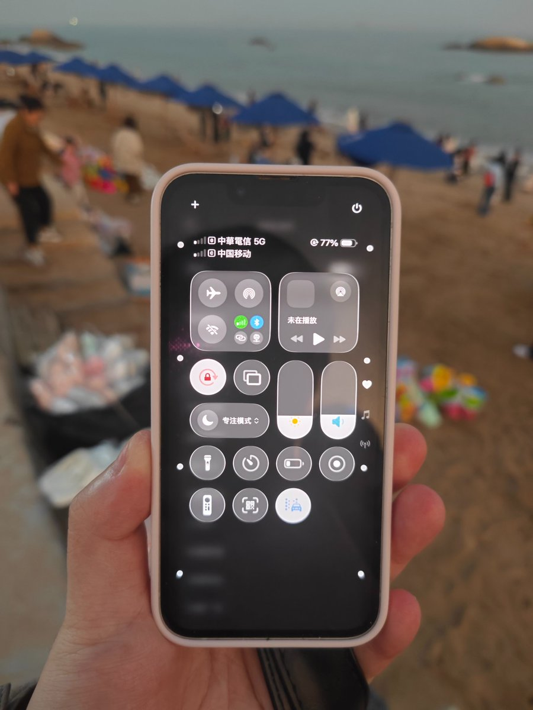
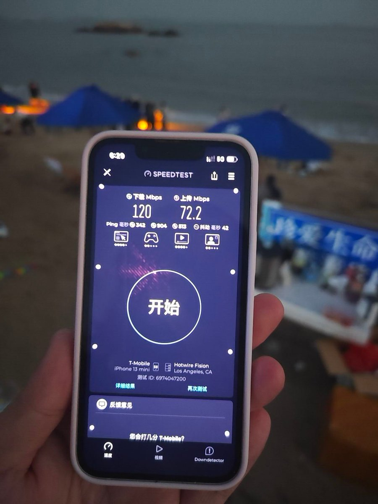
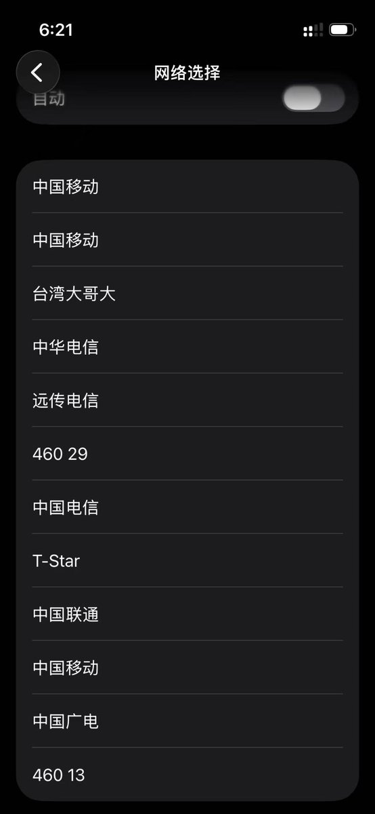
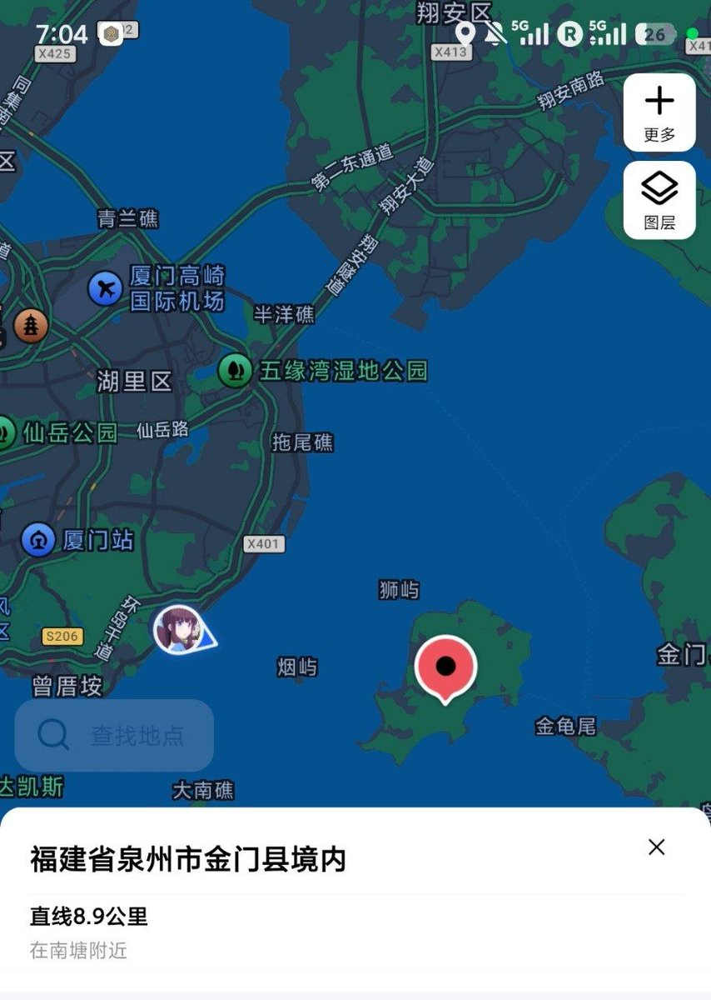

奶昔🥤
@realNyarime
看完台湾主要电信业者（中華電信、台灣大哥大）的信号覆盖，使用Google Fi在厦门黄厝海滩对着福建省泉州市金门县列屿的基站台测试。
一格5G NSA的中華大概百兆，而满格的台哥大却只有20Mbps左右。奇怪的是三个“中国移动”，甚至出现460 13（广电、移动共用基站，可漫游）和460 29（福建省政务网，由中国移动提供）。
* 台哥大的B3信号很强，谨慎在海边启用数据漫游，以免造成不必要扣费。



